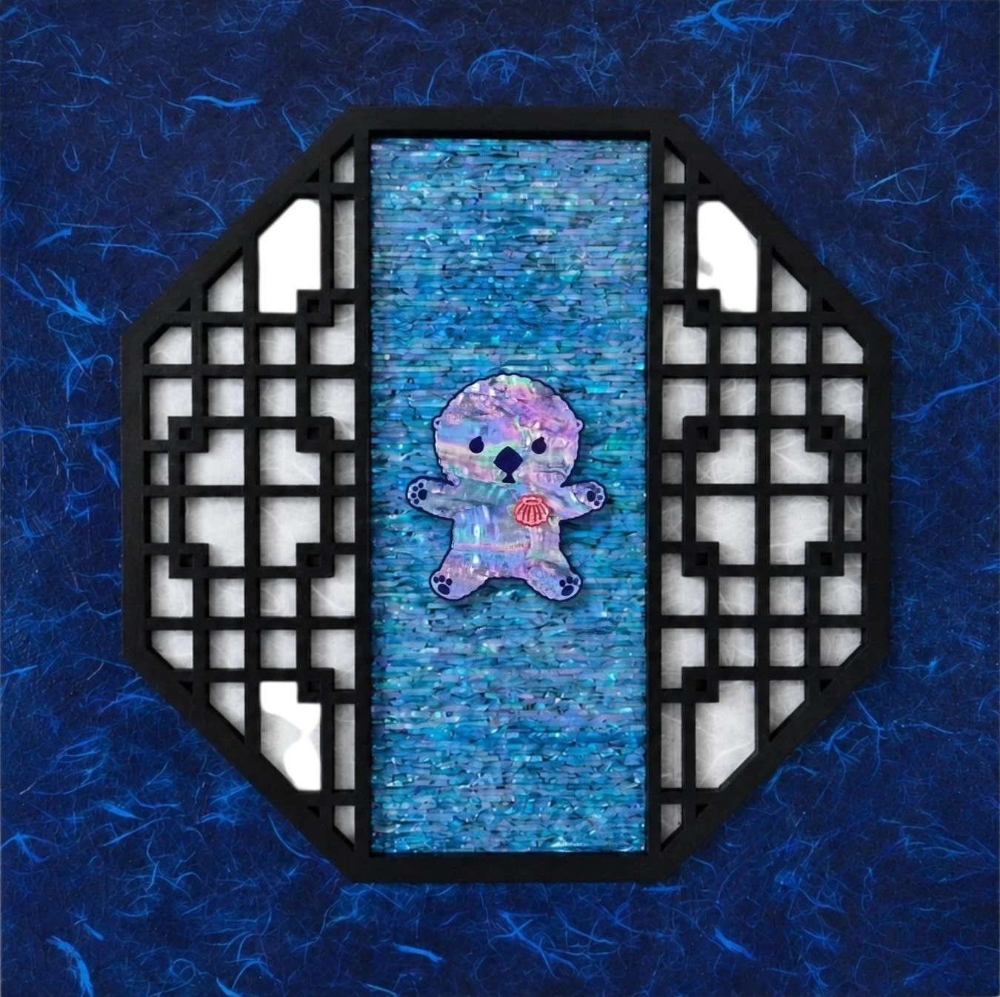

무주의 바다High Seas
High Seas무주의 바다
목심지태나전칠기(천연자개, 옻칠, 한지 등) · 38 × 38 cm · 2026Traditional Korean najeonchilgi on a hanji-covered wood core (natural mother-of-pearl, lacquer, hanji, etc.) · 38 × 38 cm · 2026
유엔해양법협약(UNCLOS) 제89조, 공해(公海)는 어떤 국가도 주권을 주장할 수 없는 만인의 바다다. 창살 바깥은 영해(領海), 나라가 주인인 바다. 창살 안쪽은 공해(公海), 누구도 주인이 될 수 없는 바다다. 그 안에서 얼빵해달은 자유롭게 떠다니고, 우리는 창살 이편에서 그 자유를 바라본다.Article 89 of the United Nations Convention on the Law of the Sea (UNCLOS): the high seas belong to no one, and to everyone. Outside the lattice lies waters, claimed by a nation. Inside it lies the high seas, claimed by none. There, Spaced-out Sea Otter drifts freely — and we watch that freedom from this side of the bars.
전시 이력Exhibitions
- [예정] 2026.11.23 – 2026.11.29 나전칠기로 아트하는 法, 갤러리 비브, 서울, 대한민국[Upcoming] 2026.11.23 – 2026.11.29 Art by Law, in Najeonchilgi, Gallery VIV, Seoul, KR
- 2026.07.30 – 2026.08.02 어반브레이크 토이콘 서울 2026, 코엑스, 서울, 대한민국2026.07.30 – 2026.08.02 URBAN BREAK & TOYCON SEOUL 2026, COEX, Seoul, KR
- 2026.07.16 – 2026.07.23 여름, 빛을 켜다 단체전, W갤러리, 분당, 대한민국2026.07.16 – 2026.07.23 Summer, Light It Up, W Gallery, Bundang, KR
- 2026.06.26 – 2026.06.29 CODE NAME: BLUE, 레온갤러리, 서울, 대한민국2026.06.26 – 2026.06.29 CODE NAME: BLUE, Leon Gallery, Seoul, KR